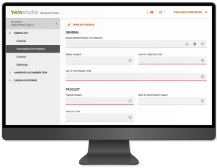

twinstudio - Coming 2025
twinstudio is a new component of our twinsphere suite, launching in 2025. It is:
- Fast & easy: Guided processes and templates enable effortless creation of administration shells and submodels – no in-depth technical knowledge required. This saves time, costs, and reduces errors.
- Standards-compliant & future-proof: Compliant with the IDTA standard for seamless, cross-company collaboration and maximum process efficiency.
- Scalable & reusable: Blueprints and submodel templates ensure a consistent Digital Twin strategy and simplify expansion to new products and business areas.
For more information please visit our twinsphere landing page ⧉.
